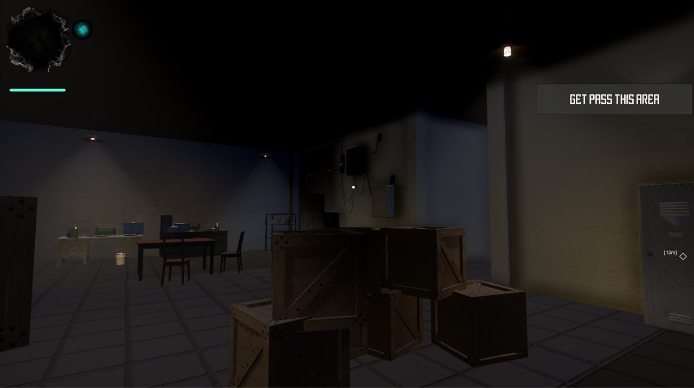
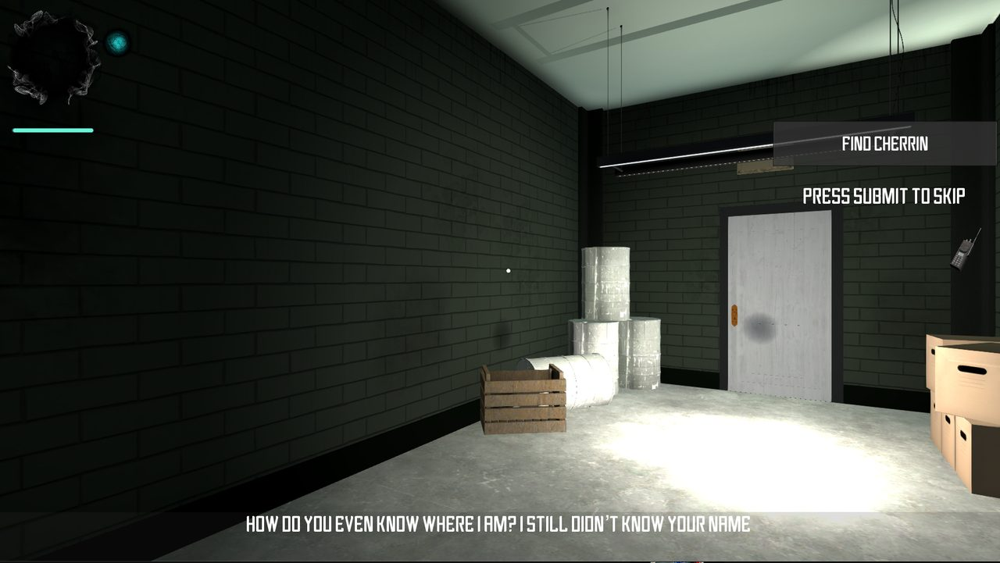
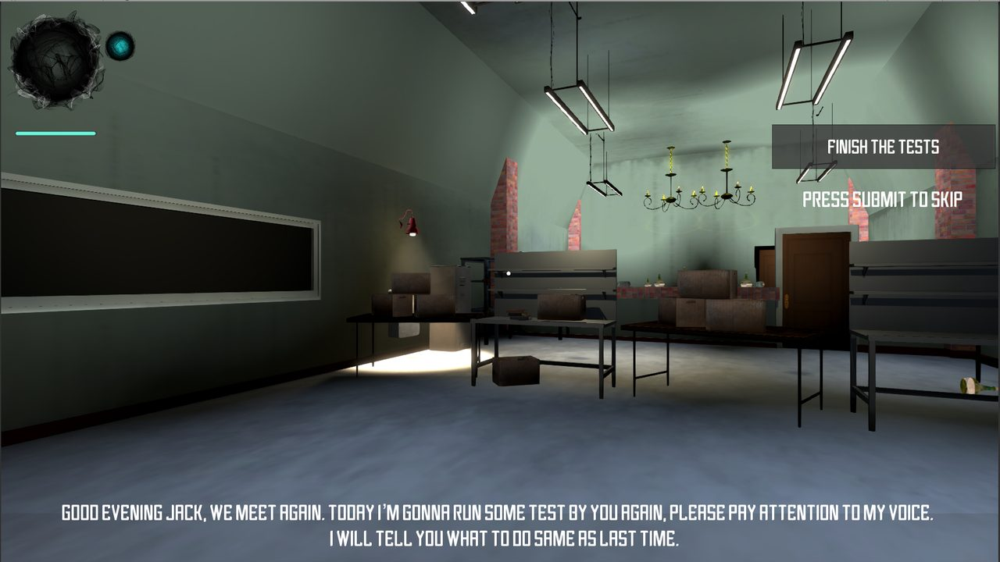
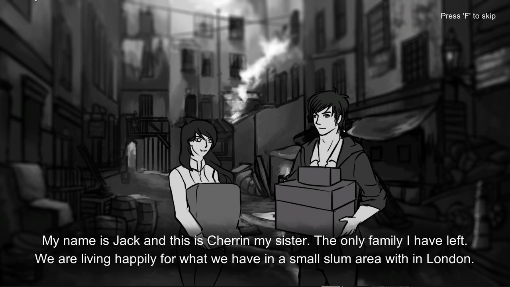

01
AI & systems
- Built the AI as a finite state machine on Unity's Animator Controller — each behaviour living on its own animation state, so the AI's current state was visible at a glance instead of hidden behind debug logs.
- Built the FPS controller and the interacting-object system.

02
Progression
Development clips from the project's build-up, ending in the Alpha milestone — much of it tracking the AI going from a tangle of if-statements to a readable state machine.
Silent Night — Alpha build
AI patrol loop — Oct 17, 2017
Dev build — Oct 18, 2017
Dev build — Oct 20, 2017
AI animation pass — Oct 20, 2017
AI — looking-around animation on station state
Gameplay — pre-Alpha
03
Screenshots



